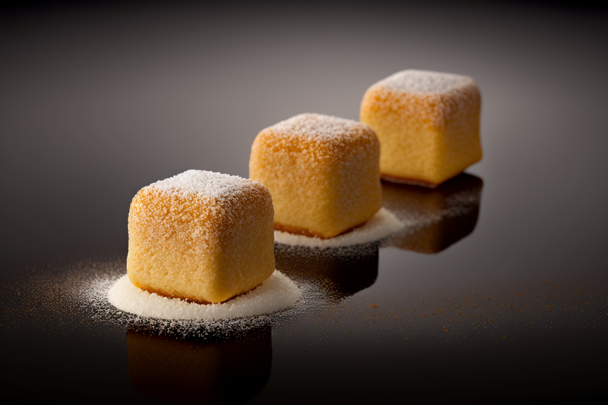

Psychedelic Mushroom Patties

Ingredients:
2 pounds of mixed edible mushrooms (such as shiitake, oyster, and portobello), finely chopped
1 cup of panko breadcrumbs
1/2 cup of grated parmesan cheese
1/4 cup of chopped fresh parsley
1/4 cup of chopped fresh basil
2 tablespoons of tomato paste
1 tablespoon of smoked paprika
1 teaspoon of garlic powder
1 teaspoon of onion powder
1/2 teaspoon of salt
1/4 teaspoon of black pepper
1/4 cup of vegetable oil
1/4 cup of flour
1/4 cup of milk
1/4 cup of plain yogurt
Food coloring (various colors)
Instructions:
Begin by finely chopping the mushrooms and placing them in a large mixing bowl.
Add the panko breadcrumbs, grated parmesan cheese, chopped parsley and basil, tomato paste, smoked paprika, garlic powder, onion powder, salt, and black pepper to the mixing bowl. Mix all ingredients together well.
Using your hands, shape the mixture into patties approximately 3 inches in diameter and 1/2 inch thick. Press down gently on each patty to create a smooth surface.
Heat the vegetable oil in a large frying pan over medium heat.
While the oil heats, place the flour in a shallow dish and add a few drops of food coloring of your choice. Mix well to combine.
In another shallow dish, mix together the milk, yogurt, and a few drops of food coloring of a different color.
Dip each patty first in the flour mixture, shaking off any excess, and then in the milk mixture. Make sure each patty is completely coated in both mixtures.
Add the patties to the frying pan and cook for 2-3 minutes on each side, until golden brown.
Serve the Psychedelic Mushroom Patties on a bed of lettuce or on a bun with your favorite toppings.
Enjoy your visually striking, psychedelic mushroom patties that are sure to impress your guests! Note that the food coloring is optional and can be adjusted to your liking.